Form Builder Feature
Designed a flexible Form Builder that lets administrators use templates, save custom forms, or build forms directly within an event.

Overview
Vega Events helps K–12 schools plan and manage customizable events throughout the school year. Through user research, we identified the need for built-in forms that could handle registrations, permission slips, attendance, and more without relying on external tools.
I designed a flexible Form Builder that allows administrators to use pre-built templates, save custom templates, or create forms directly within an event, making information collection faster and more seamless.
Problem
Schools relied on a variety of tools and manual processes to collect information from event attendees, including registrations, RSVPs, food selections, permission slips, waivers, and liability forms.
While these workflows were closely tied to event management, administrators often had to leave Vega and recreate the same forms repeatedly across multiple events. The challenge was creating a flexible system that could support diverse use cases while remaining simple enough for busy school administrators to manage.
Solution
I designed a Form Builder that allows administrators to create, save, and reuse customizable forms directly within Vega.
Users can start from pre-built templates, create organization-wide templates, or build forms directly within an event and save them for future use. The result is a centralized system that streamlines data collection while reducing repetitive administrative work.
Process
Research & Discovery
As Vega expanded its event management capabilities, we conducted customer interviews and analyzed common event workflows to better understand how schools collected information from attendees.
While the use cases varied widely, a clear pattern emerged: forms were a critical part of event management.
Key Insights
- Schools frequently collected registrations, RSVPs, and attendance information.
- Permission slips and liability waivers were common requirements for student activities.
- Administrators regularly recreated similar forms across multiple events.
- Many organizations relied on external tools to manage information collection.
- Users wanted flexibility without having to build every form from scratch.
These findings revealed an opportunity to bring information collection directly into Vega's event management ecosystem.
Opportunity
The challenge wasn't simply creating a form builder, it was designing a system that balanced customization with efficiency.
Some organizations wanted complete control over every field, while others preferred quick-start solutions that required little setup.
The design challenge became: How might we support highly customized forms while making common workflows fast and repeatable?
User Flows
To understand where forms fit within the event creation process, I mapped the relationship between event setup, registration management, and form creation.
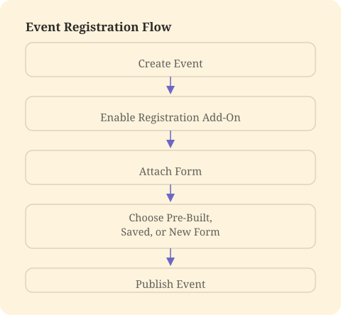
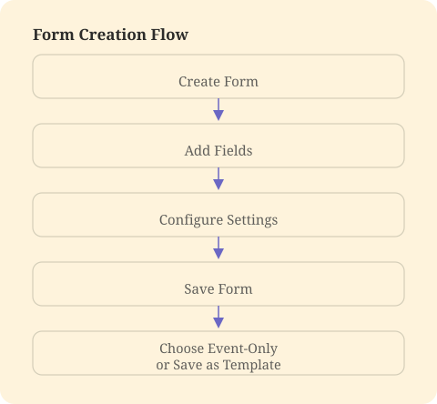
Mapping these flows helped identify where templates could reduce repetitive work while still allowing customization when needed.
Design & Iteration
To accommodate a wide range of use cases, I designed multiple entry points into the form-building experience.
Administrators could start with Vega-provided templates for common school workflows, create and manage organization-wide templates in Settings, build custom forms directly within an event, save event-specific forms for future reuse, and configure forms for registrations, waivers, surveys, attendance tracking, and more.
Throughout the design process, I focused on reducing setup time while preserving flexibility, ensuring the experience could scale from simple RSVP forms to more complex registration workflows.
Form Settings
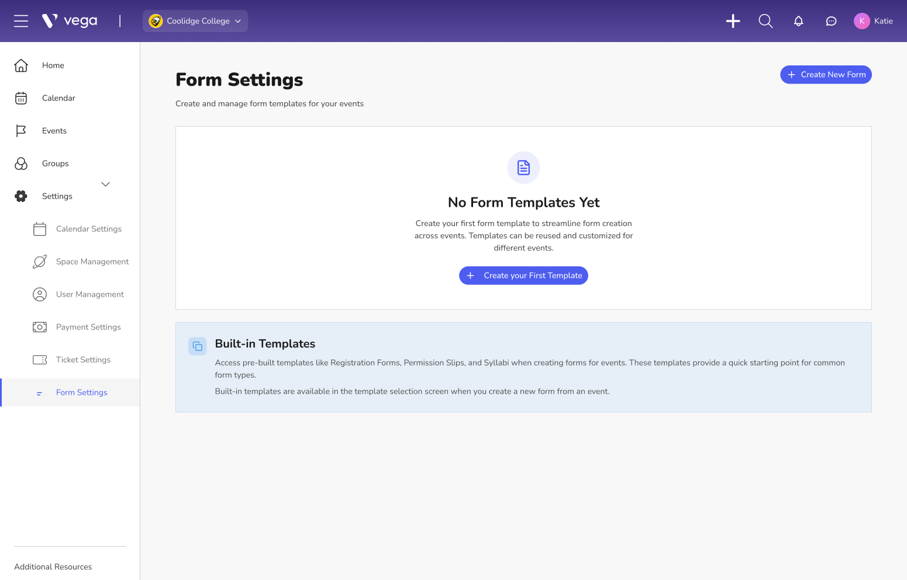
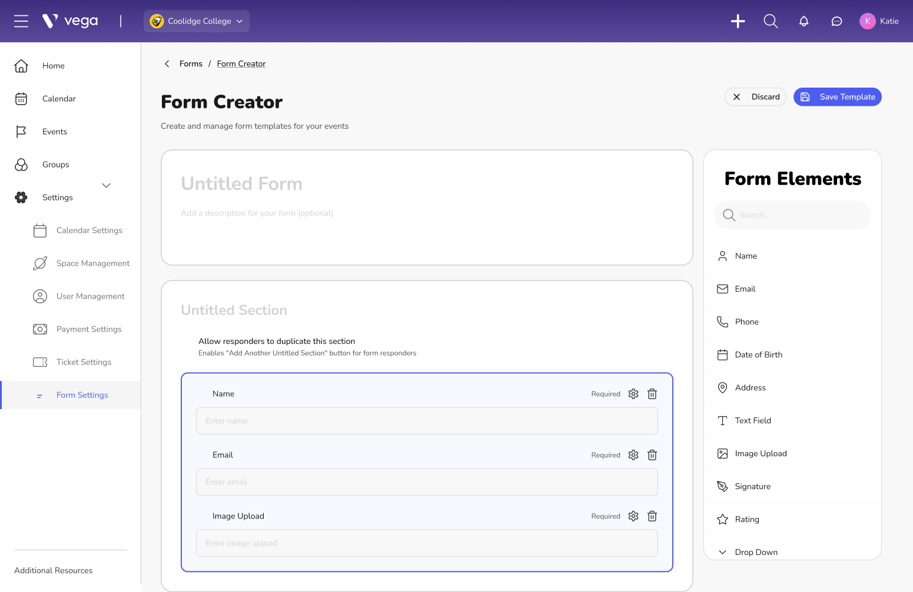
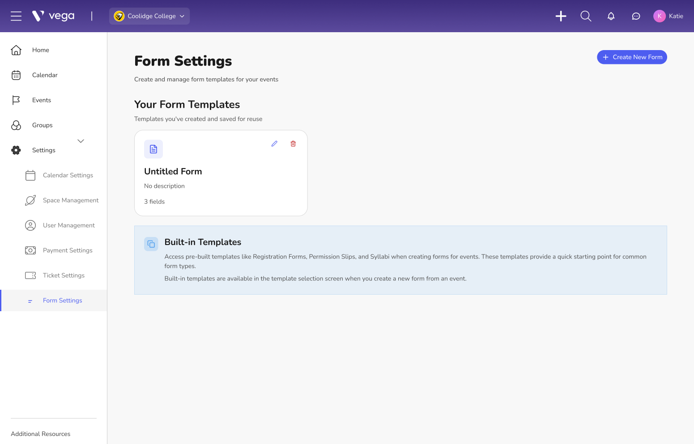
Create Form
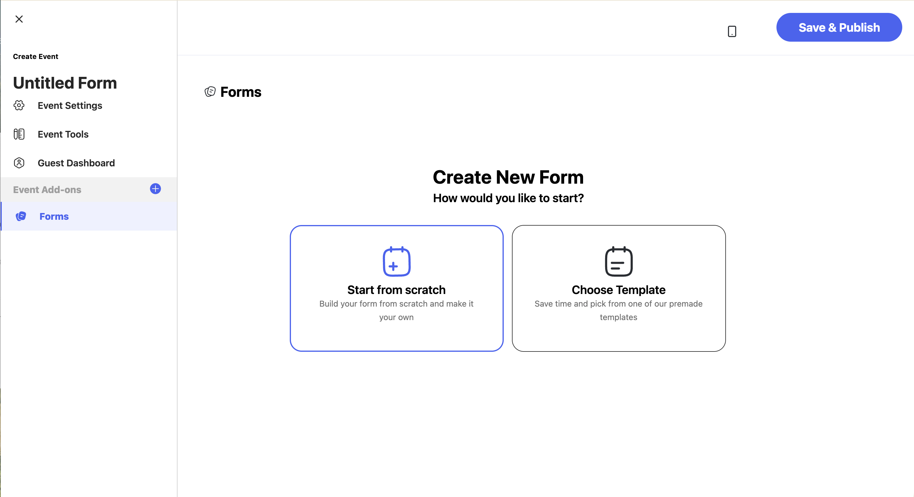
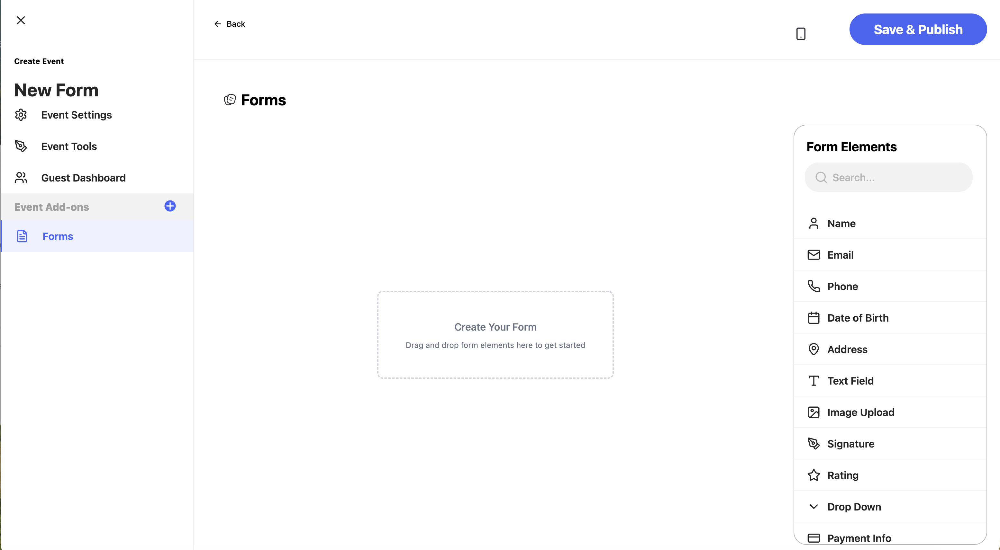
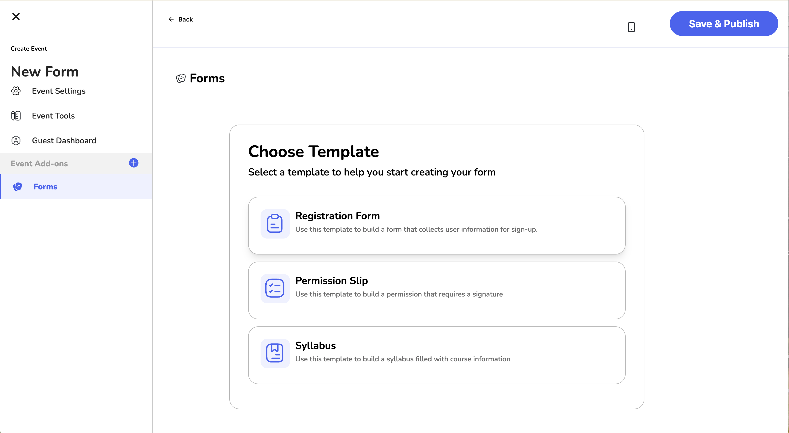
Form Responses
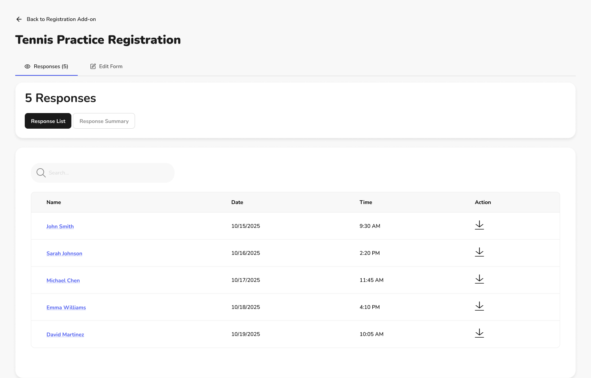
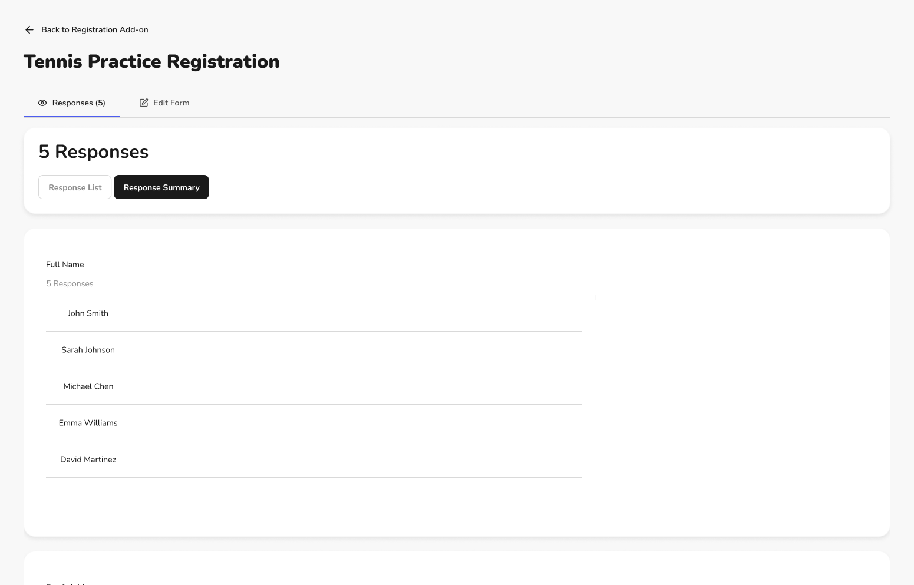
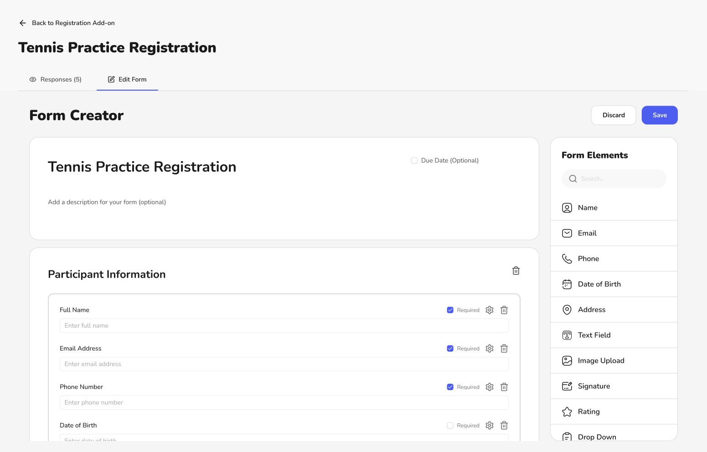
Outcome
The Form Builder transformed information collection from a disconnected process into a native part of event management.
Schools could create forms once, reuse them across events, and standardize common workflows without sacrificing customization.
By combining pre-built templates, reusable organization templates, and event-level form creation, the final solution supported both efficiency and flexibility, allowing administrators to spend less time rebuilding forms and more time managing successful events.